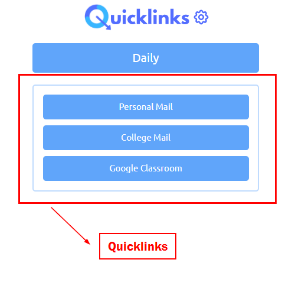
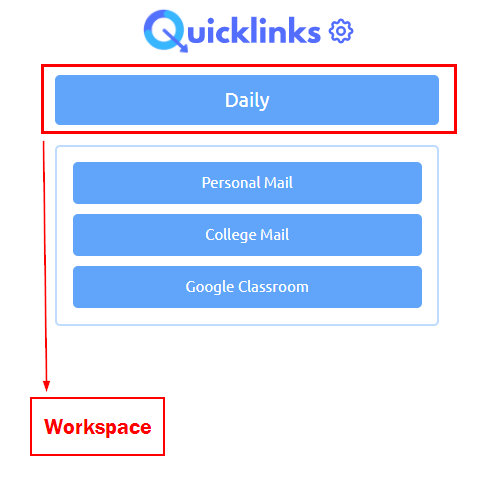
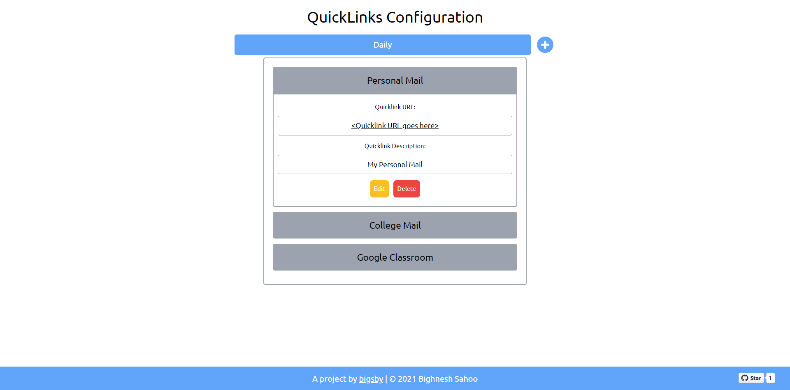

Incase of any suggestions, queries or difficulties, contact me at bigsbydev@gmail.com
1. Quicklinks
Quicklinks refer to the links that you have saved to the extension that you want to quickly access from the extension panel. Click on the Quicklink to open the URL in a new tab.
2. Workspaces
Workspaces are the collection of Quicklinks that belong in the same group. For example, you can create workspaces for things like Daily for your daily usage, Socials for your social media handles, etc.
3. Options page
Options page is the extension's configuration page where you can configure Quicklinks to your needs. Access the options page by clicking on the 'Settings icon' in the extension panel.
